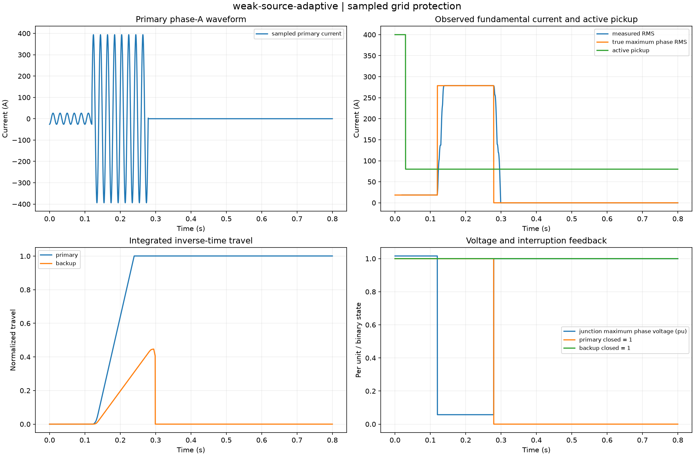

Reproducible sampled grid protection. Units and field components are printed on the scientific axes. RMS phasors use exp(+i omega t); terminal currents point into the protected line.
Sealed numeric archive | Summary CSV | Physical parameters | Run request | Source and environment

| backup_tripped | False |
|---|---|
| clearing_delay_s | 0.159375 |
| final_junction_voltage_pu | 1.0000000000000127 |
| maximum_inverter_control_residual | 9.85878045867139e-15 |
| maximum_network_residual | 1.1116831302945449e-14 |
| maximum_primary_true_rms_a | 278.63154610657574 |
| primary_measurement_valid_fraction | 0.975400234283483 |
| primary_tripped | True |
| required_isolation | True |
| selective | True |
| unnecessary_openings | 0 |
These are simulations, not hardware measurements. Network-model, measurement, timing and statistical uncertainty require distinct convergence checks. Singular or unilluminated data use explicit masks.
Source revision: b6841e1232dcac6db840a727ea4b1e98340b98a7.
Dirty checkout: False.
Configuration SHA-256: e897edafdff580135533a4a7e9fed14e234859889b47c4339f1d77da567831f5.
Replay preserves original source and parameter provenance. SHA-256 manifests detect changed bytes; they are unsigned integrity records, not certificates of physical validity.